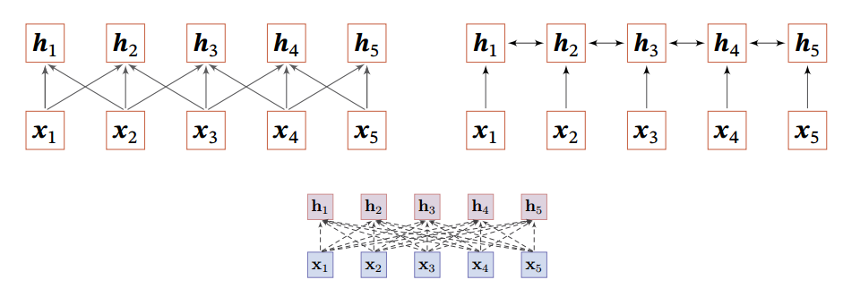
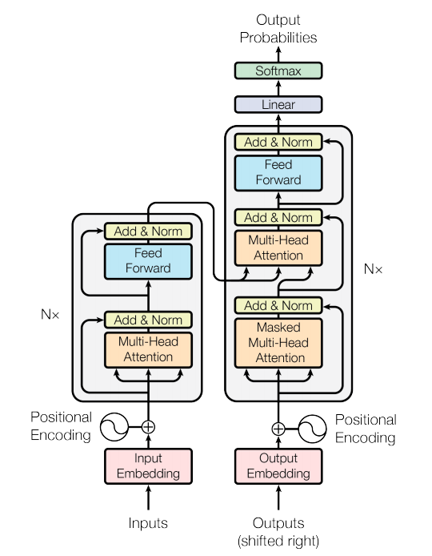

漫谈注意力机制（五）：自注意力与Transformer
Attention Is All You Need关键点解读以及关于SelfAttention的一些理解和扩展~
自 Neural Machine Translation by Jointly Learning to Align and Translate 提出 Attention 机制后，各种 Attention 机制百花齐放，如果你的任务没有用上 Attention 机制，可以说落后于当前研究。
个人认为，Attention Is All You Need 提出 Transformer 是目前注意力机制最成功的体现，当然后来有了 BERT 等更成熟综合的模型，不过都是跟随最初 Transformer 工作。本文结合自己的理解分析一下Google提出的Transformer模型，不会涉及方方面面，只分析核心的几点，更多的细节请参考论文。
自注意力
Transformer的一个重要的内容是Self Attention，解决QKV数据结构问题，但不止这些。
我们都知道Attention是注意力分布$\lambda_i = p(z=i|\boldsymbol{X},\boldsymbol{q})$下的期望，
对于键值对类型的数据结构可改为，
这个查询向量$\boldsymbol{q}$是什么呢？键值对分别是什么呢？Google的做法简单直接，通过对输入的向量序列$\boldsymbol{X} = [\boldsymbol{x}_{1},\dots,\boldsymbol{x}_{n}]$进行线性变换获得，即，
由于$\boldsymbol{Q},\boldsymbol{K},\boldsymbol{V}$都是来自向量序列$\boldsymbol{X}$，因此称这种注意力机制为Self Attention。
Transformer中的Attention
全连接网络是一种非常直接的建模远距离依赖的模型， 但是无法处理变长的输入序列。然而序列数据是不定长的，这意味着链接权重是动态变化的，如果在全连接网络上加上注意力机制，我们就可以动态地根据序列生成不同的链接权重。
假设输入为 $\boldsymbol{X} = [\boldsymbol{x}_{1},\dots,\boldsymbol{x}_{n}] \in \mathbb{R}^{n \times d}$，通过线性变换获得 $\boldsymbol{Q},\boldsymbol{K},\boldsymbol{V}$ 变量，即
再直观点，对于QKV展开来看，
那么在点积缩放模型评分函数下，第$i$个查询向量$\boldsymbol{q}_i$对向量序列中第$j$个键$\boldsymbol{k}_j$的评分值为$\alpha_{ij}$，
因此给予这种评分函数的Attention也称为Scaled Dot-Product Attention。那么可以构成矩阵$A = [a_{ij}]$，
矩阵中的第$i$行表示查询向量$\boldsymbol{q}_i$对向量序列中所有键$\boldsymbol{k}_j, j = 1, \dots, n$的评分值，
因此，对于查询向量$\boldsymbol{q}_i$，获得的Attention结果为，
这里$\boldsymbol{h}_i \in \mathbb{R}^{1 \times d_v}$。
于是，对于所有的查询向量$\boldsymbol{q}_i, i = 1, \dots, n$，就有
这里的softmax是对矩阵$\frac{\boldsymbol{Q}\boldsymbol{K}^{\top}}{\sqrt{d_k}}$按行归一化。$d_{k}$ 是一个比较关键的参数，降低 $d_{k}$ 会使矩阵 $\boldsymbol{Q}\boldsymbol{K}^{\top}$ 容量下降，从而带来性能的下降，导致 Attention 模型的整体表达能力的下降。具体来说是$\boldsymbol{q}_{i}\boldsymbol{k}_{j}^{\top}$点积模型的值通常有比较大的方差，即容易取到较大的值，进而导致softmax容易落入饱和区，优化时梯度取值较小，不利于优化，于是使用$\operatorname{softmax}(\alpha \boldsymbol{x})$这种形式来说优化模型。
考虑到$\boldsymbol{Q},\boldsymbol{K},\boldsymbol{V}$都是通过$\boldsymbol{X}$线性变换而来的，那么$\operatorname{Attention}(\boldsymbol{Q},\boldsymbol{K},\boldsymbol{V})$可以理解成是把$\boldsymbol{X} = [\boldsymbol{x}_{1},\dots,\boldsymbol{x}_{n}] \in \mathbb{R}^{n \times d}$的序列变换为$[\boldsymbol{h}_1, \dots, \boldsymbol{h}_n] \in \mathbb{R}^{n \times d_v}$的特征提取器，
从这个角度看，RNN、CNN都是可以归结为这种形式，
那么这三类模型在模型架构上有什么本质区别呢？
RNN .vs. CNN .vs. Attention
RNN本质上是递归结构，即
而CNN是一种局部依赖结构，即
CNN、RNN、Attention架构对比，

而Attention（指Transformer中的Self Attention）是一种动态的全连接网络，
这里的动态体现在$\lambda_{i,t}$的计算上，
每个输出$\boldsymbol{h}_t, t=1, \dots, n$都是不同权重$\big[\lambda_{1,t}, \dots, \lambda_{n,t} \big]$对输入序列$[\boldsymbol{x}_1, \dots, \boldsymbol{x}_n]$加权平均的结果。如果$\lambda_{i,t}$与$t$无关，就退化成普通的全连接网络。
Masked Attention
Masked Attention则是给定查询向量$\boldsymbol{q}_m$，直接与$\boldsymbol{k}_i, i = 1, \dots, m$的键进行评分计算，与该范围外的键评分取值不存在，用分段式来表示为，
这里去$-\infty$是考虑在softmax归一化后分值直接变为0，于是对应的评分函数矩阵为，
这相当与添加上一个负无穷的上三角矩阵Mask，即
那么，在softmax按行归一化后，变为一个下三角矩阵，
这样在编码时，Attention的输出$\boldsymbol{h}_t$只用到$t$之前的输入，
这对于单向语言模型建模很重要。
个人理解，对评分矩阵添加不同的Mask矩阵相当于对模型作出不同的偏置，比如对评分矩阵添加一个负无穷的上三角矩阵Mask，相当于对模型作单向偏置，即只能从左到右。
稀疏注意力（补充）
以上我们分析到，对评分矩阵（注意力矩阵）添加不同的Mask矩阵相当于对模型作出不同的偏置，有一类偏置就是稀疏性。基于这样的Mask的注意力机制称为稀疏注意力。它们的本质就是以一定的规则Mask注意力评分矩阵，
对于查询向量$q_i$，它只能看到$|i-j| \le k$范围内的$k_j$，那么称为局部注意力；对于$i\le j$，就是上述提到的单向注意力。如果$j=k,2k,\dots, k\gt 0$，那么称为“空洞”注意力，就像CNN中的膨胀卷积核。
总之，稀疏注意力的本质是Mask的不同处理，它为模型引入先验的一种方式。
Transformer的可视化
可视化理解 Transformer（稍等，动画加载中~），

Transformer 是一种基于 Attention 机制的网络架构，其全连接特点使其有别于 CNN、RNN 等网络，可以直接捕获序列数据的长距离依赖。在 Google 论文 Attention Is All You Need 中，其结构如下，

可以看到是一种 encoder-decoder 架构，无论是 encoder 还是 decoder，其核心都是 Multi-Head Attention。仔细观察发现，encoder 部分和 decoder 部分架构差不多，差别就是在 Multi-Head Attention 的使用上。这也说明，我们可以根据场景单独使用 encoder 部分或 decoder 部分，当然这是后话，我们以后在分享。
多头注意力
多头注意力（ Multi-Head Attention） 就是对以上的Attention操作独立重复多次，假设每个独立的Attention操作用$head_i$表示，那么多头注意力为，
这种做法类似 CNN 中滤波器（filters）的数量。自注意力可以配合多头注意力使用，能够让模型捕捉更丰富的信息。
Transformer为什么能成？
底层网络组建是基于SelfAttention无偏置的网络架构，然后大量的数据训练。
总结
此外，这篇论文还有很多元素，如FFN（Position-wise Feed-Forward Networks）、Encoder、Decoder、Masked Multi-Head Attention等等，详细可以参考这篇论文。
通过以上分析，我们可以知道 Transformer 由于其核心 Multi-Head Attention，相比于 RNN、CNN 有如下三个优势：
- 直接获取序列中的长距离依赖（RNN、CNN 并不具备）
- 避免递归计算，并行度高，能够大幅降低训练和推理时间（RNN 不具备）
- 依靠 Position Embedding 能够处理序列的位置关系（CNN 不具备）
基于注意力机制的Transformer 是一种新的、基于 Attention 机制来实现的特征提取器，可用于代替 CNN 和 RNN 来提取序列的特征。
转载请包括本文地址：https://allenwind.github.io/blog/9481
更多文章请参考：https://allenwind.github.io/blog/archives/